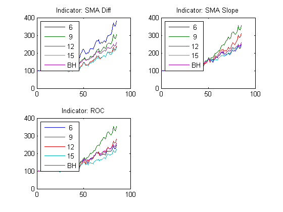

Commodities Trading with MATLAB - Parameter selection
While backtesting a trading strategy, the analyst is often required to determine the optimal values of various strategy parameters and measure the sensitivity of the strategy's profits to changes in these parameters. Manual parameter value selection can be performed if the number of independent parameters is low; in other cases, it might be worthwhile to automate the process of parameter optimization using local or global optimization solvers across multi-dimensional parameter spaces.
In this script, we demonstrate how to map the parameter space of our trading strategy for our chosen set of parameters - the momentum indicator and the lookback window. The script computes and plots the strategy performance across multiple lookback periods for the three different momentum indicators included in this webinar.
Contents
1. Setup
Load the cleaned, aligned data that was retrieved using the Demo_A script.
clc;clear;
load('StageA');
cmd = CommodityMetadata;
cmdtypes=CommodityTypes;
2. Compute Cross-sectional strategy for various indicators and lookback periods
In this section, we call a function that computes normalized index values for our momentum catch-up strategy as well as for a buy and hold strategy. This function accepts a momentum indicator function as one of its parameters, and returns the above index values for each value specified in the lookback window vector. Looking at the indices, we can hopefully figure out which indicator works best, and which lookback window sizes are most suitable for our strategy.
lookbackWindow=[6:3:15]; container=TrainingSetMonthly; clc; [allIdxSMADiff, idxBAH]=ComputeCrossSectionalStrategy(cmdtypes,... container,@IndicatorSMADiff,lookbackWindow); [allIdxSMASlope,~]=ComputeCrossSectionalStrategy(cmdtypes,... container,@IndicatorSMASlope,lookbackWindow); [allIdxROC,~]=ComputeCrossSectionalStrategy(cmdtypes,... container,@IndicatorROC,lookbackWindow);
3. Plot the indices vs B&H per indicator
This section plots the results of the test above.
h=subplot(2,2,1); PlotIndicatorTest(h,[allIdxSMADiff idxBAH],'SMA Diff'); h=subplot(2,2,2); PlotIndicatorTest(h,[allIdxSMASlope idxBAH],'SMA Slope'); h=subplot(2,2,3); PlotIndicatorTest(h,[allIdxROC idxBAH],'ROC');